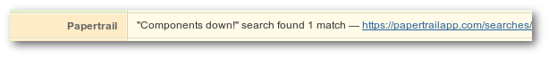
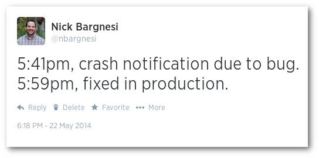
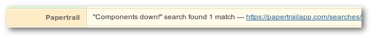

Highlights
Proactive Monitoring


From Prototype to Production


Honorable mentions: OSGi, component-based designs, Apache Buildr, and MongoDB.
Honorable mentions: Supervisor, component-based designs
Honorable mentions: Supervisor, component-based designs